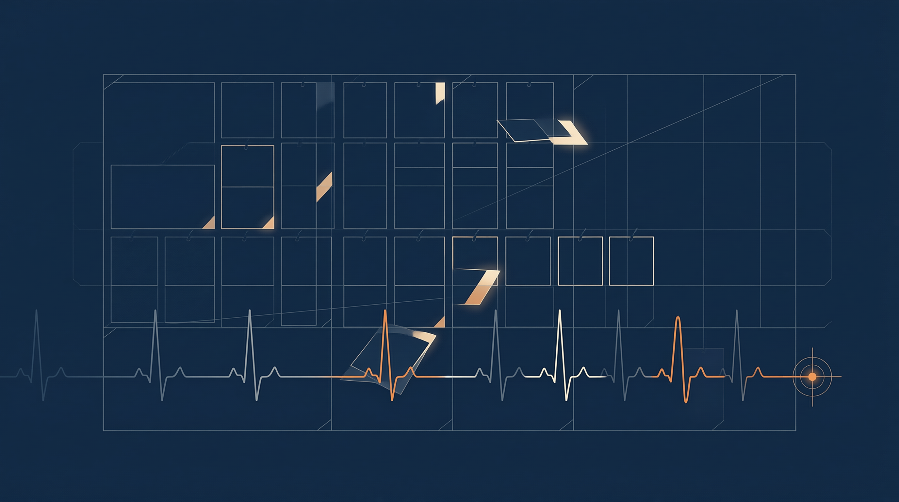

01
Kanban 多 Agent 平台
heartbeat 心跳保活 · reclaim 失联回收 · zombie detection 僵死检测——把多智能体看板从"能跑"推向"能守"。
02
/goal 命令 · Ralph LoopCORE
Agent 锁定目标跨 turn 执行——不再因单轮结束而放弃；失败即重入、偏离即收敛，目标直至完成方才释放。
03
Checkpoints v2
State 持久化重写、
真剪枝 与磁盘护栏——让长任务在断电级故障后仍可无损续跑。
04
Sessions Survive Restarts
Gateway 崩溃后自动恢复会话上下文；进程可以死，工作流不能断。
05
制度含义 · Tenacity as Norm
"可靠性"从代码质量延伸到任务持久性——Agent 必须把开始的事做完。

心跳守护任务，锁定不偏离目标
HEARTBEAT × GOAL-LOCK
Paradigm
Reactive → Tenacious
从被动响应到持久追索
Invariant
Session Never Dropped
进程可死，工作流不断